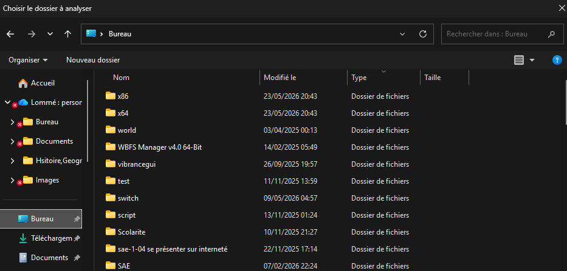

Mes SAÉ
Documentation de mes SAÉ avec contexte, livrables, compétences mobilisées et preuves.
SAÉ 104 — Découverte du web et création d'un site
Conception et déploiement d'un site web dans le cadre de la SAÉ 104. Ce projet m'a permis de mettre en pratique mes connaissances en HTML/CSS et JavaScript, en produisant un site fonctionnel hébergé sur GitHub Pages. Réalisé en intégrant les principes fondamentaux de l'architecture web et les bonnes pratiques du développement front-end.
Outils utilisés
HTML / CSS / JavaScript, VS Code, Git, GitHub Pages
Livrable produit
Site web fonctionnel hébergé et accessible en ligne via GitHub Pages
Résultat
Site déployé et consultable publiquement — lien actif
SAÉ 11 — Hygiène informatique
présenter un sujet sur le traitement du matérielle informatique ici sur Comment se protéger des réseaux sociaux ?
Outils utilisés
Powerpoint, internet, connaissance sur le sujet, vidéo
présenter une problématiques
comment s'en protéger de la mauvaise influence des réseau sociaux
SAÉ 2.03 — Développement d'une application de gestion des absences
Conception et réalisation d'une application web full-stack avec Django pour la gestion des absences dans un établissement scolaire. Projet réalisé en équipe avec une architecture MVC, modélisation de base de données et déploiement en machines virtuelles.
Outils & Technologies
Django (Python), HTML/CSS, SQLite, Git, Virtual Machines
Livrables principaux
Application web complète, Schéma relationnel, Diagramme de Gantt, Documentation
Résultat
Application fonctionnelle de gestion des absences
Schéma relationnel

Diagramme de Gantt
SAE ESP32 Radio — Radio Internet avec ESP32
Réalisation d'une radio internet connectée basée sur un microcontrôleur ESP32, avec interface web et streaming audio.
Technologies
ESP32, Arduino IDE, WiFi, Audio streaming
SAÉ 1.05 — Traitement de Donnée
Création d’un outil de « reporting » qui permet localiser les gros fichiers du disque
Notre objectif est de réaliser un programme entre powershell et python, pour analyser l'espace de stockage, On analyse dans un dossier faisant + 20 MB, et la répartition selon les fichiers et souus-dossiers

TP : R2.08 & R2.09
Retour réflexif sur mes travaux pratiques de programmation orientée objet et développement web/BDD, avec difficultés rencontrées et solutions apportées.
R2.08 — Programmation Orientée Objet en Python
Cette ressource m'a introduit à la programmation orientée objet (POO) en Python. À travers 3 TP progressifs, j'ai appris à modéliser des entités réelles sous forme de classes et d'objets, à gérer des relations entre classes (héritage, composition), et à structurer du code Python en plusieurs fichiers.
TP1 — Gestion de garage
Modélisation d'une concession automobile : classes Voiture, Garage, Concession. Gestion d'un fichier JSON (vehicules.json) et interface utilisateur en mode texte (obj_ihm_texte.py).
TP2 — Approfondissement POO
Extension du projet TP1 avec des concepts plus avancés de la POO Python : méthodes spéciales, encapsulation, et gestion des données persistantes.
TP3 — Animaux & extraction de verbes
Création d'une classe Animal et d'un script extract_verb.py qui analyse un fichier texte (verb.txt) pour en extraire les verbes — combinaison de POO et traitement de fichiers.
- Comprendre le principe d'encapsulation : distinguer les attributs privés (
self.__attr) des attributs publics et savoir quand utiliser les getters/setters. - Organisation multi-fichiers : au TP1, gérer les imports entre
obj_voitures.py,garage.py,concession.pyetmain.pysans créer de dépendances circulaires. - Héritage au TP3 : implémenter correctement
Animalavec des sous-classes et surcharger les méthodes sans casser le comportement parent.
- Relecture de la documentation Python officielle sur les classes et utilisation de
__dict__pour mieux comprendre les objets en mémoire. - Création d'un schéma papier des relations entre classes avant de coder — ce qui m'a permis de visualiser les dépendances et d'ordonner les imports.
- Tests unitaires avec
test.pypour valider chaque méthode indépendamment et identifier précisément les bugs.
R2.09 — Développement Web & Bases de Données (Python/HTML)
Cette ressource couvre le développement web côté serveur en Python ainsi que la gestion de bases de données relationnelles. J'ai réalisé plusieurs exercices progressifs (EXO1 à EXO3) puis un projet de gestion de bibliothèque avec opérations CRUD complètes, en combinant Python, HTML/CSS et SQL.
EXO1 / EXO2 / EXO3
Exercices progressifs d'initiation au développement web avec Python : génération de pages HTML dynamiques, formulaires, traitement de données côté serveur.
CRUD complet (dblcrud)
Implémentation d'un CRUD (Create, Read, Update, Delete) sur une base de données relationnelle avec Python — projet dblcrud.
- Connexion Python ↔ BDD : comprendre le fonctionnement du curseur (
cursor.execute(),fetchall()) et la gestion des commits/rollbacks lors des erreurs SQL. - Génération dynamique de HTML : construire du HTML en Python (template strings ou Jinja2) sans framework front-end, ce qui rend le code vite illisible si mal structuré.
- Modélisation relationnelle : définir les bonnes clés étrangères et éviter les redondances dans le schéma de la bibliothèque (livres, auteurs, emprunts).
- Adoption systématique des requêtes paramétrées dès le début du projet
dblcrud— habitude prise grâce à un retour d'enseignant sur le TP bibliothèque. - Séparation claire entre la logique Python (traitement des données) et la présentation HTML (templates) pour garder un code lisible et maintenable.
Journal de bord
Documentation progressive de mon travail, des difficultés rencontrées et des solutions trouvées au fil des semaines.
TP Validation — DHCP sur commutateur Cisco
Séance de TP de type validation : dépannage d'un système réseau avec configuration d'un DHCP sur un commutateur Cisco. Exercice réalisé en conditions de contrôle, sans documentation autorisée.
(config)#ip dhcp pool qui bloque toute la configuration.POO Python — Modélisation d'une concession automobile
Premier TP de programmation orientée objet : création des classes Voiture, Garage et Concession avec persistance des données en JSON. Première approche de la structure multi-fichiers en Python.
concession.py importait garage.py qui importait obj_voitures.py) — le moindre import circulaire faisait planter le programme.POO Python — Héritage & traitement de fichiers texte
TP3 avec deux volets : implémentation de la classe Animal avec héritage, et script extract_verb.py pour extraire les verbes d'un fichier texte. Combinaison de POO et manipulation de fichiers.
__str__, __repr__) dans les sous-classes écrasait le comportement parent de façon inattendue, causant des sorties incorrectes lors des tests.super().__init__() et super().methode() pour appeler explicitement le comportement parent avant d'ajouter le comportement spécifique à la sous-classe.Web + BDD — Application bibliothèque & CRUD
Développement d'une application de gestion de bibliothèque en Python avec interface web HTML/CSS et base de données SQLite. Opérations CRUD complètes sur les livres, auteurs et emprunts.
cursor.execute("SELECT * FROM livres WHERE id=?", (id,))). Bonne pratique désormais appliquée systématiquement dans dblcrud.Retour d'expérience
Ce que j'ai appris, ce que je referais autrement, et mes perspectives pour la suite du BUT.
Ce que j'ai appris
Issu d'un BTS SN option IR, j'aborde le BUT R&T avec des bases solides en programmation, en administration système et en réseaux Cisco. Ce semestre m'a permis de consolider ces acquis tout en découvrant de nouvelles problématiques propres aux télécommunications.
- Mise en pratique des protocoles réseau dans un cadre académique structuré
- Développement d'une page web complète hébergée (SAÉ 104)
- Travail en équipe avec gestion de version Git
- [Ajoutez vos autres apprentissages clés du semestre]
Ce que je referais autrement
[Analysez vos points d'amélioration : qu'est-ce qui n'a pas fonctionné comme prévu ? Quelle organisation, méthode ou approche aurait été plus efficace ? Cette réflexion critique distingue un portfolio de qualité.]
Objectifs et perspectives
Mon objectif principal est de m'engager dans l'Armée de l'Air et de l'Espace, où les compétences en réseaux, cybersécurité et systèmes numériques sont directement valorisées. Le BUT R&T me donne les bases techniques et méthodologiques pour y accéder.
[Quelles compétences souhaitez-vous renforcer au prochain semestre ? Quel type de stage ou d'alternance visez-vous ?]